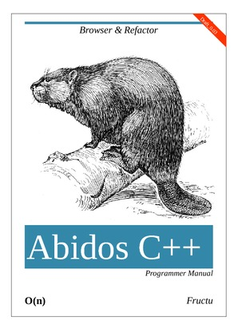

github
Next
Abidos C++ Programmer Manual
fructu
<
fructu@gmail.com
>
Revision History
Revision 0.02
November 2012
Fructu
starting to write this documentation:
Table of Contents
1. Introduction
1.1. Milestones
1.2. How read this book
2. Making
2.1. Configuration
2.1.1. processor/CMakeLists.txt
2.1.2. processor/src/CMakeLists.txt
2.1.3. processor/includes/CMakeLists.txt
2.2. Files generated automatically
2.3. Compilation & linking stages
2.4. Other make rules
3. Architecture of abidos
3.1. Abidos Components
4. Loader
4.1. One C++ file
4.2. .abidos_cpp/files_input
4.3. Loader classes
5. Lexer
6. Mangling
6.1. Composite
6.2. Mangling classes
6.3. Mangling functions
7. Recursive descent parser
7.1. Classes
7.2. Debugging Abidos
7.3. Meaningful parts of parser
7.4. How do token_get() token_next() do their work ?
8. Trace system
9. Context
9.1. How do context do it?
9.2. Parts of context
10. Symbols table
10.1. Most important classes of symbols table
10.2. Saving context
11. Testing Abidos C++
11.1. Executing the tests
11.2. Hey wait a moment, testing files are C++ files!
11.3. Test files and what they testing
12. Advanced trace
12.1. Inner classes